Name: Peiyi Zheng
JHED ID: pzheng4
Compiler: gcc 5.4.0
Environment: Ubuntu 16.04
Number of late days used: 0
Image Processing:
- Noise::
|
|
|
--noisify 0 |
--noisify 0.1 |
--noisify 0.5 |
- Brightness::
|
|
|
--brighten 0.5 |
--brighten 1.0 |
--brighten 2.0 |
- Luminance::
- Contrast::
|
|
|
--contrast 0.5 |
--contrast 1.0 |
--contrast 2.0 |
- Saturataion: :
|
|
|
--saturate 0.5 |
--saturate 1.0 |
--saturate 2.0 |
- Quantization: :
|
 |
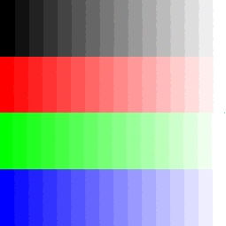 |
--quantize 1 |
--quantize 2 |
--quantize 4 |
- Random Dither: :
| 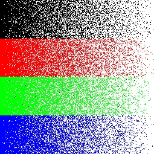 |
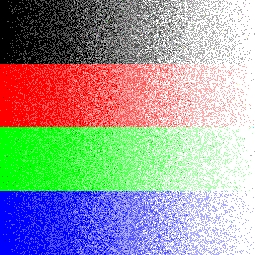 |
|
--rDither 1 |
--rDither 2 |
--rDither 4 |
- Ordered Dither: :
| 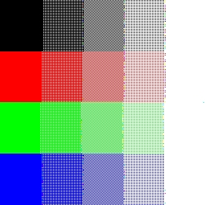 |
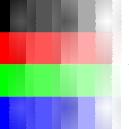 |
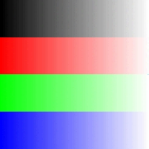 |
--oDither2x2 1 |
--oDither2x2 2 |
--oDither2x2 4 |
- Floyd-Steinberg Dither: :
| 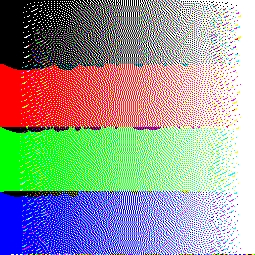 |
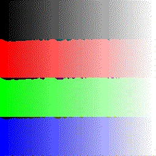 |
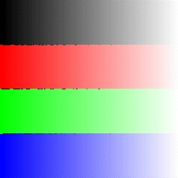 |
--fsDither 1 |
--fsDither 2 |
--fsDither 4 |
- Blurring::
- Edge Detection: :
- Scaling (Nearest Sample): :
| 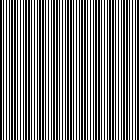 |
 |
|
--scaleNearest 0.7 |
--scaleNearest 1.0 |
--scaleNearest 1.3 |
- Scaling (Bilinear Sample): :
|
|
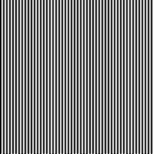 |
--scaleBilinear 0.7 |
--scaleBilinear 1.0 |
--scaleBilinear 1.3 |
- Scaling (Gaussian Sample): :
| 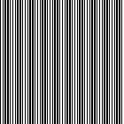 |
|
|
--scaleGaussian 0.7 |
--scaleGaussian 1.0 |
--scaleGaussian 1.3 |
- Rotation: :
| 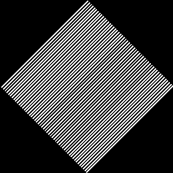 |
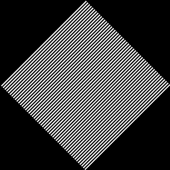 |
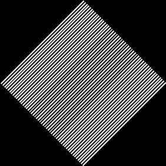 |
--rotateNearest 45 |
--rotateBilinear 45 |
--rotateGaussian 45 |
- Composite: :
- Fun: :
- Morphing: :
- Morphing Frames(0.1-0.5): :
|
|
|
|
 |
0.1 |
0.2 |
0.3 |
0.4 |
0.5 |
- Morphing Frames(0.6-105): :